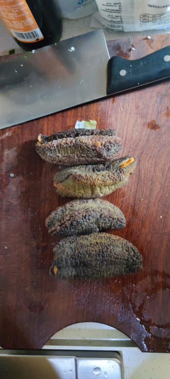
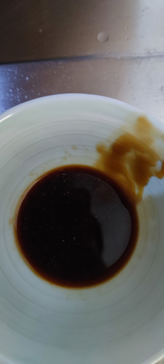
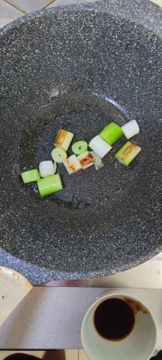

葱烧海参的做法
这道菜的做法并不难，就是海参泡发是需要时间的。疫情隔离在家，干海参是过年前存的年货，正好拿出来尝试一下。
预估烹饪难度：★★★
必备原料和工具
- 泡发好的海参
- 大葱葱白
计算
每份：
- 泡发好的海参（北极参） 4 个
- 大葱葱白 1 根大葱的葱白即可
- 食用油 20-25ml
- 蚝油 20g
- 生抽 5g
- 白糖 2g
- 淀粉 2g
操作
- 葱白切成 1cm 的段，备用。
- 海参切成 1cm 的段，备用。
- 准备一个空碗，倒入 20g 蚝油， 10g 生抽， 2g 白糖，搅拌均匀。
- 另一个空碗倒入淀粉，水，制备水淀粉，勾芡用。
- 热锅，锅内放入 20ml - 25ml 食用油。等待 10 秒让油温升高。
- 放入葱白，调小火，注意不要让葱白变焦。大概煎 3-5 分钟即可。
- 用筷子夹出葱白，放入盘中备用。
- 倒入调好的料汁，炒香，等待 1 - 2 分钟 。
- 放入切好的海参，翻炒 1 分钟
- 加入 100 ml 的水， 中小火， 等待 5 分钟
- 等待锅中汤汁快干的时候，加入水淀粉，加入前面取出的葱白
- 在外观呈粘稠状态后关火，盛盘
附加内容
- 操作时，需要注意观察锅中的水量，如快见底的时候就直接接入水淀粉即可。
如果您遵循本指南的制作流程而发现有问题或可以改进的流程，请提出 Issue 或 Pull request 。